I don't have formal training in art, but I'm a long-time amateur artist. I love working at the intersection of art and linguistics.
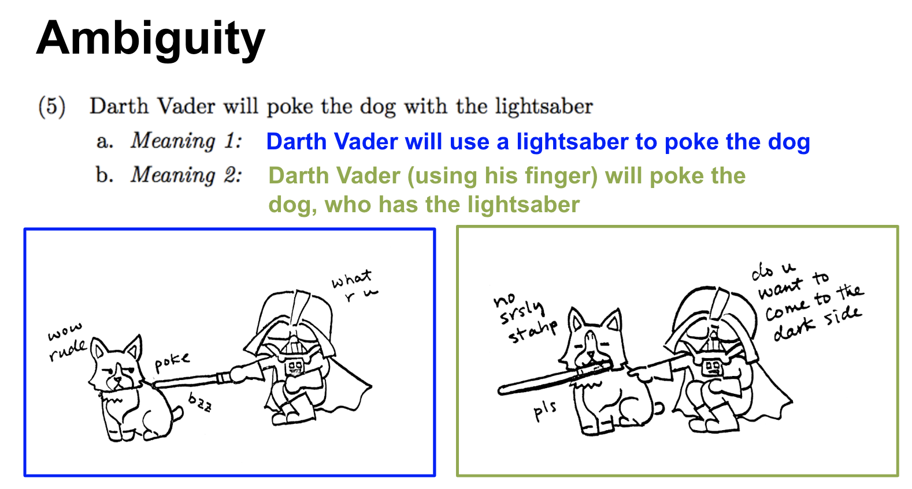
I make language-and linguistics-related comics a lot (find out more here). I did this one when I was an undergrad, and it's made its way around the internet apparently:
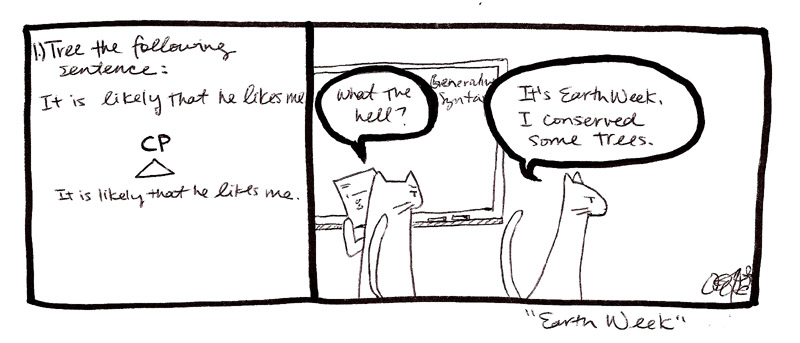
I've drawn child-friendly illustrations for language-acquisition experiments in the MSU Language Acquisition Lab:
 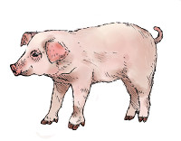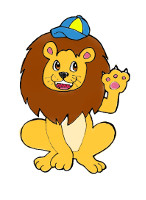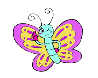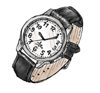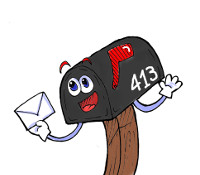
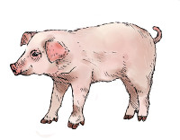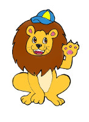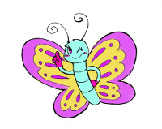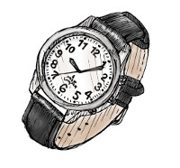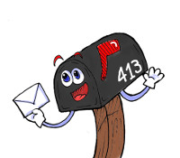Here are some highlights from my slides from my 5-Minute Linguist talk at the 2019 LSA Annual Meeting:
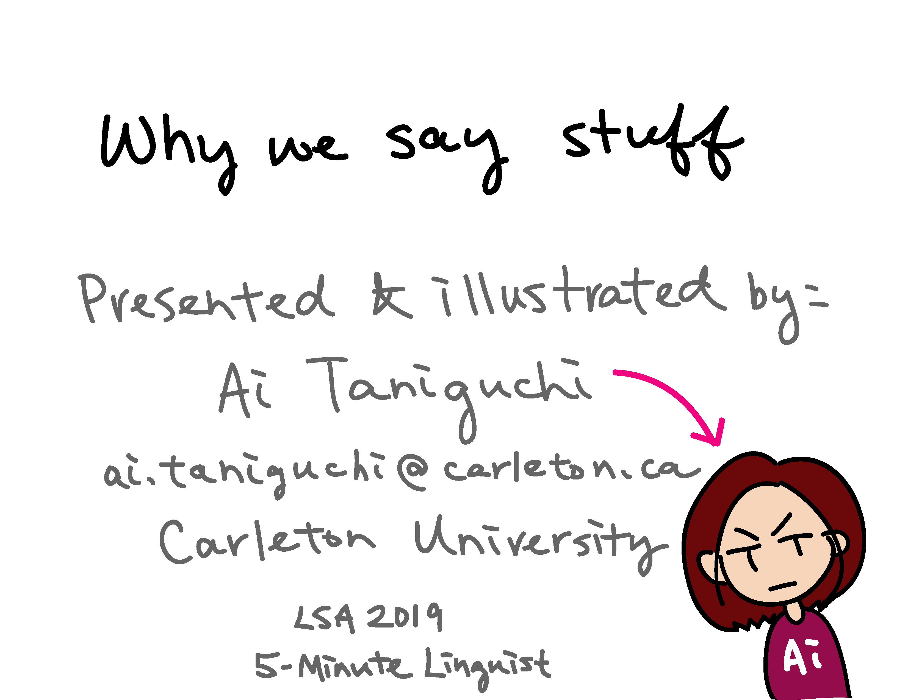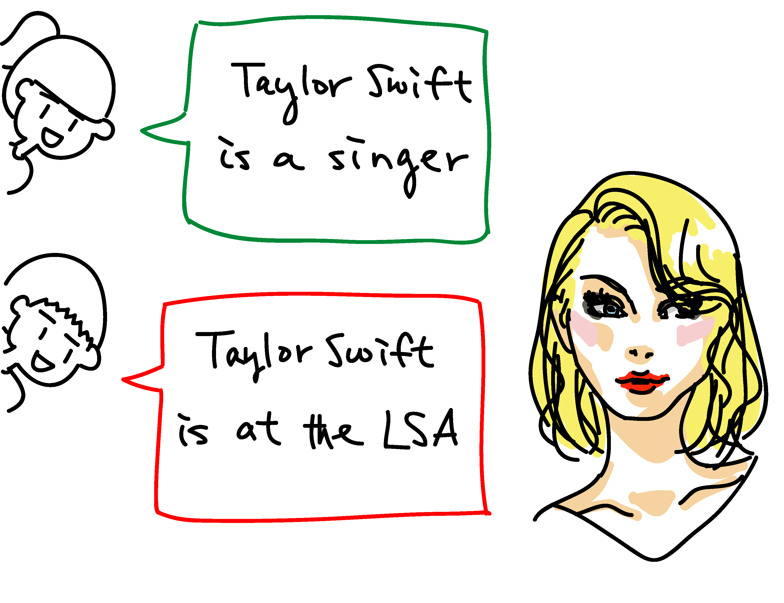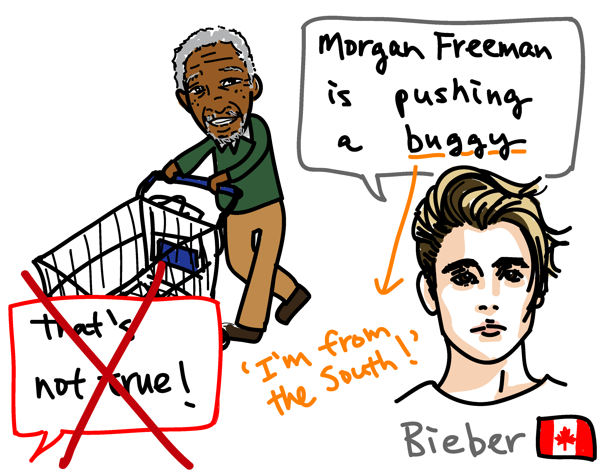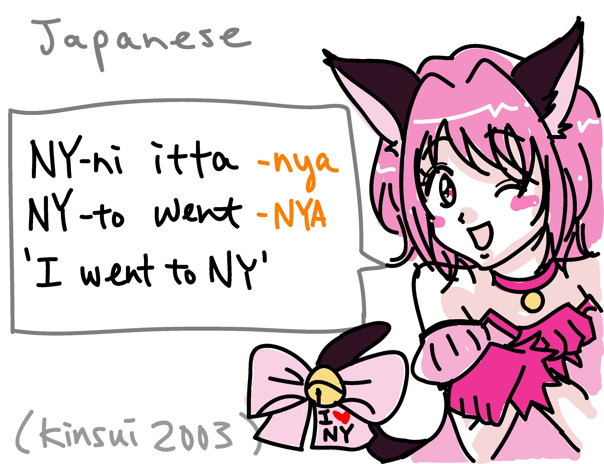